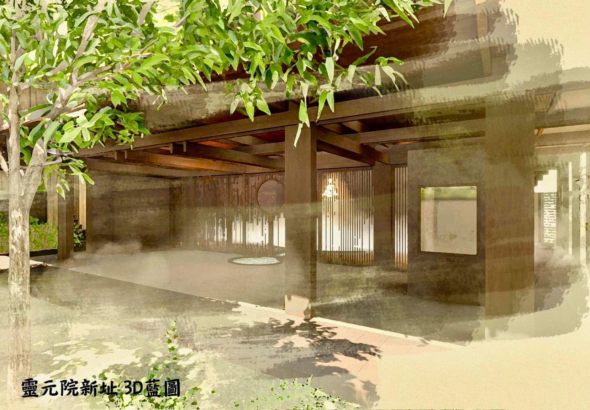
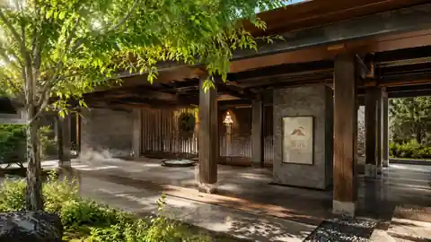
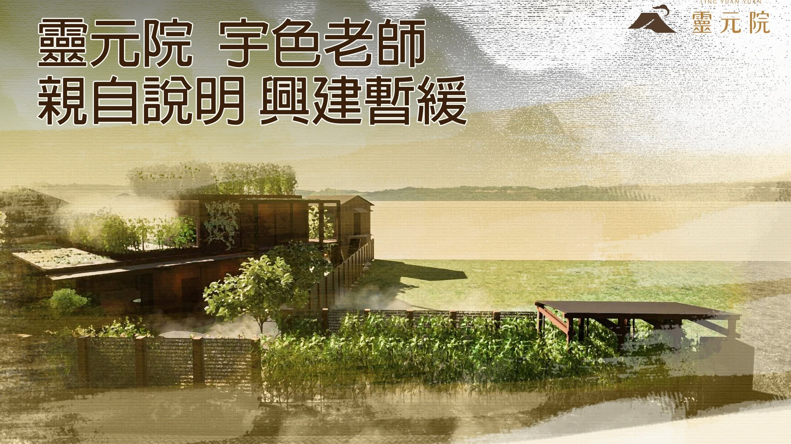
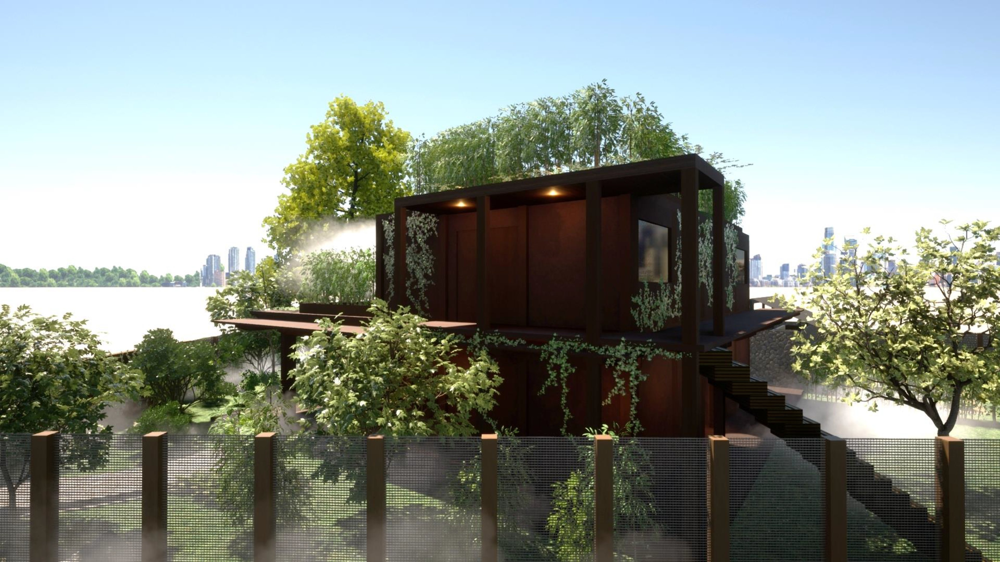
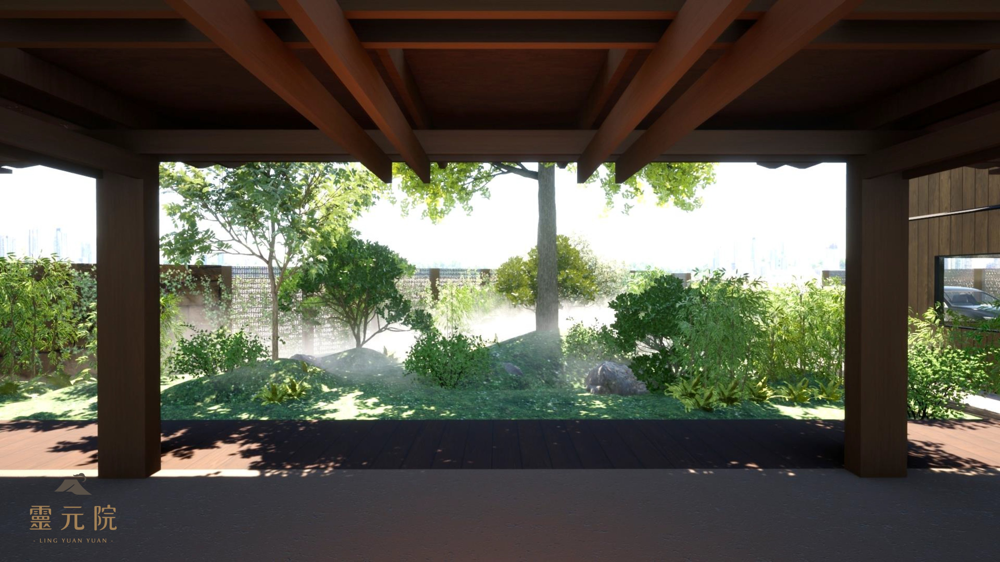

從一個願心開始
2023 年，靈元院正式確定啟動建院計畫。
從一開始，宇色老師對靈元院的想法就很清楚：我們希望打造的，不只是一棟建築，而是一個真正適合修行、能夠讓人安定下來的地方。
母娘也曾特別指示，靈修的環境非常重要。真正適合修行的地方，不應只是被鋼筋水泥包圍，而要能夠與自然、土地、植物、陽光與風有所連結。人在自然之中，身心比較容易放鬆，原本累積的疲憊、混亂與沉重，也更有機會慢慢沉澱、轉化。
對靈修而言也是如此。當一個人愈能回到自然的環境，愈能靜下來，重新感受自己的呼吸、身體與內在，也愈容易進入真正穩定的修行狀態。
因此，靈元院從選址、規劃到設計，始終不只是在思考「哪裡可以蓋」，而是在回答一個更重要的問題：什麼樣的地方，才真正適合一個人長久修行？
我們希望留下的，是一處讓人走進來之後，願意慢下來、安住下來，重新與自己、與元神、與神明相遇的地方；也是一座能夠承接參拜、共修、法儀、學習與法脈延續的靈修道院。

宇色老師｜建院近況親自說明
建院真正困難的地方，往往不只是把圖畫出來，而是在每一次現場條件、工程取捨與長久使用需求之間，反覆尋找最適合靈元院的答案。
從土地、建築與動線，到庭園、光線、材料與修行者實際停留的感受，宇色老師持續與工程團隊逐一檢視，也將在影音中親自向大家說明目前的建院進度與未來規劃。
2026 年 8 月｜建院工程重新前進
最新更新｜2026 年 8 月
截至 2026 年 8 月，靈元院的建院工程已經重新啟動。
目前先將大殿外圍以鐵皮結構架設起來，作為現階段的保護與工程基礎；未來真正的大殿空間，仍會在內部依照整體規劃逐步完成。同時，其他區域的泥作、水電、廁所、通道、室內空間與環境整理，也都陸續重新檢討與施工。
現在的速度，也許不像最初想像得那麼快。但至少，我們重新往前走了；而且這一次，我們希望走得更穩。
主體建築外觀已逐步成形，現場持續依工程節點推進。
停工兩年半，我們沒有放棄
建院的過程並不順利。工程進行期間，我們遇到一些阻礙，整個建院工程曾經停工長達兩年半。
這兩年半，從外面看，好像靈元院停了下來；但實際上，我們從來沒有真正停止。宇色老師一方面持續尋找其他可能更適合的土地，一方面也不斷重新思考：原來的地方，能不能透過新的規劃、工法與調整方式，再把這座道場完成？
這段時間，我們重新檢視建築、動線與空間，重新找回工程團隊，再一次把每一個問題攤開來處理。我們很清楚，現在的靈元院沒有辦法一次全部完成，所以選擇不急著做表面，而是一個區域、一個區域地處理：可以先完成的，就先完成；需要調整的，就重新調整。
幾年之後，當大殿、庭園與廊道都完成時，人們看到的會是一座已經成形的道院；而總功德主此刻所見證的，正是它仍在鋼筋、混凝土與一個個工程節點之中，被一步一步接回來的時候。


我們想蓋的，不是一間普通的道場
靈元院未來的建築，會盡可能與周圍環境融合。我們將保留大量植栽、樹木與自然景觀，運用木造元素與不同的自然材質，而不是讓整個空間成為冰冷的水泥建築。
宇色老師這些年在不同國家旅行、參訪，看過許多寺院、庭園、修行空間與自然建築，也一直把所看到、所感受到的細節，一點一點帶回靈元院的規劃。其中，也包括日本庭園對於留白、植物、動線，以及人與空間關係的思考。
我們希望未來的靈元院，不只是「蓋得漂亮」，也不只是複製一座傳統宮廟。它應當保有道院的莊嚴，同時保有自然、留白與可以安住的尺度。
當一個人走進來，會自然地慢下來；知道哪裡可以安靜、哪裡可以停留，也知道自己來到這裡，可以暫時放下外面的紛亂。這才是我們真正想完成的靈元院。





為什麼選擇台中豐原？
我們希望靈元院不要距離市區太近，能夠保留自然、安靜與空間感；但同時，也不希望它真正位在交通不便的深山裡。
這其中，有一個很實際的考量：今天來到靈元院的信眾，十年、二十年之後都會慢慢年長。如果有一天，大家很想回來參拜、共修、看看母娘，卻因為山路遙遠、交通不便而無法前來，那麼原本希望提供給大家修行的地方，反而會成為一種負擔。這不是我們想要的。
最後選擇台中豐原，就是希望在「接近自然」與「交通可及」之間，找到一個平衡。
我們希望未來的靈元院，是大家可以來參拜、共修、上課的地方；也可以什麼都不做，只是在園區裡走一走、坐一坐，讓自己靜下來。庭園、廊道、留白與光線不是附加的裝飾，而是修行空間的一部分。
建院歷程｜一個共同的願，如何一步一步成形
2023 年｜靈元院正式確定啟動建院計畫，從選址開始，逐步展開整體空間、建築與修行環境的規劃。
停工期間｜工程雖然停下長達兩年半，但尋地、重新規劃、檢討工法與整合工程團隊的工作，從未真正停止。
2026 年 8 月｜建院工程重新啟動，以大殿外圍結構及必要設施為優先，泥作、水電、廁所、通道、室內空間與環境整理同步逐步推進。
下一階段｜先把核心與必要設施做好，再依工程次序，一個區域、一個區域完成其他使用空間、庭園與整體環境，讓整座道院慢慢完整。
致每一位總功德主
這幾年，靈元院經歷過許多變化。因此，我們特別製作這個建院專頁，讓總功德主知道，自己一路護持的靈元院目前走到了哪裡；也讓大家實際看見，這座道場如何一點一點被建設起來。
「總功德主」所代表的，從來不只是捐助一筆建院經費，更重要的是一個人的發心。
願意擔任總功德主，代表你願意站在前面，先走一步。在一件事情還沒有完全完成、許多人仍在觀望的時候，你願意先相信、先支持，也願意用自己的行動，讓更多人知道：這件事情值得大家一起來完成。
它不是地位，也不是名銜，而是一種帶頭發願、拋磚引玉的角色。
一個人的力量也許有限，但當第一個人願意站出來，第二個人、第三個人就會慢慢加入；最後匯集的，不再只是某一個人的功德，而是許許多多人的願心，共同成就一座可以延續很多年的道場。
你不只是參與建一座靈元院，也成為了讓這座道場得以往前走的一份力量。
從修行的角度來說，一個人願意承擔、願意布施、願意成就一件超越自己個人利益的事情，本身就是一種很重要的修行。當我們願意從「我自己需要什麼」，跨出去思考「我能夠為更多人留下什麼」，生命的格局也已經開始改變。
未來，當靈元院真正完成，當有人來到這裡參拜、靜坐、共修、學習，甚至只是在樹下坐一會兒，重新找回一點內在的平靜時——在這座道場裡，都有曾經護持建院的每一份願心。
謝謝您在這座道院還沒有完全成形之前，就已經選擇站在它的起點，與我們一起見證：不只是一座建築慢慢完成，而是一個共同的願，正在一點一點成形。